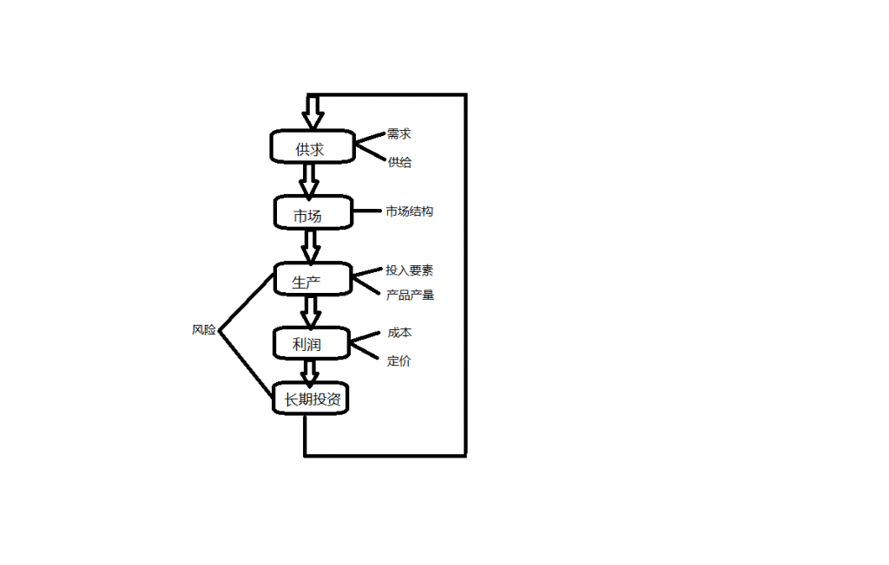

<div class="articleLocationOnion"><a href='../../index.html'>首页: </a> &gt; <a href='../index_s.html'>未分类</a> &gt; 管理经济学</div><div style="color:blue" align=center>管理经济学</div><br><div id="article_content" class="article_content tracking-ad" data-mod="popu_307" data-dsm="post">

<h4>&nbsp; &nbsp; &nbsp;<span style="font-size:18px"> &nbsp;管理经济学：经济是指社会物质生产，流通，交换等活动。这门课也是讲了这样一个过程，即人们有了需求就会进行交换，也就形成了市场，有了市场就会有企业进行一系列的生产活动（生产决策），当然企业生产也是为了获得利润，只有获得了利润才会有长期的投资</span></h4>
   
</div><div class="ArcitleLink"><a href='http://blog.csdn.net/hejingyuan6/article/details/7416553'>原文链接</a>